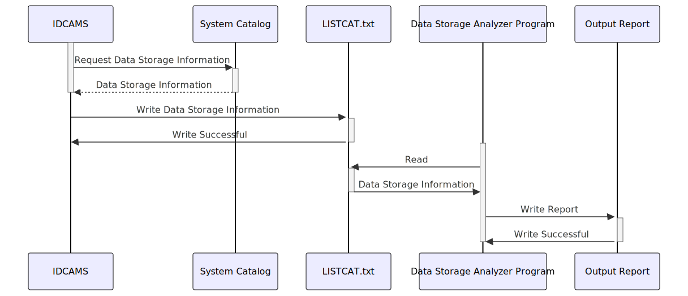

Gerado em: 1º de outubro de 2024
Título do Documento: Programa de Análise de Armazenamento de Dados do Aplicativo CardDemo
Descrição Resumida:
Este programa analisa o armazenamento de dados do aplicativo CardDemo, fornecendo um inventário dos arquivos de dados e suas características. Ele usa o arquivo LISTCAT.txt como entrada, que contém a saída de um comando IDCAMS LISTCAT executado no sistema mainframe onde o CardDemo está sendo executado. O programa analisa este arquivo, extrai informações relevantes sobre cada arquivo de dados e as apresenta em um formato estruturado.
Histórias do Usuário: Como administrador do sistema, preciso ter uma compreensão clara do armazenamento de dados usado pelo aplicativo CardDemo para que eu possa gerenciar os recursos de armazenamento de forma eficaz, realizar backups e solucionar quaisquer problemas relacionados a dados.
Épico Relacionado: 10 - Gerenciamento de Arquivos de Dados
Requisitos Técnicos:
LISTCAT.txt linha por linha e extrai informações sobre cada arquivo de dados.
LISTCAT.txt.NONVSAM, CLUSTER, DATA, INDEX, GDG BASE, etc.Modelos Relacionados
FileName String: O nome do arquivo de dados.FileType String: O tipo de arquivo (VSAM ou NONVSAM).FileOrganization String: A organização dos dados dentro do arquivo (por exemplo, KSDS, AIX).StorageLocation String: O volume onde o arquivo está armazenado.CreationDate Date: A data em que o arquivo foi criado.Size Number: O tamanho do arquivo em unidades de armazenamento.RecordCount Number: O número de registros no arquivo.Configurações:
InputFilePath: Caminho para o arquivo LISTCAT.txt. Padrão: AWS.M2.CARDDEMO.LISTCATOutputFilePath: Caminho para o arquivo de relatório de saída. Padrão: CardDemo_Data_Storage_Report.txtMelhorias de Código:
LISTCAT.txt grandes com eficiência.Melhorias de Segurança:
LISTCAT.txt e o arquivo de relatório de saída para restringir o acesso ao pessoal autorizado.LISTCAT.txt e no arquivo de relatório de saída se eles contiverem informações confidenciais.Diagrama Conceitual:
–Made by “Smart Engineering” (by Compass.UOL)–